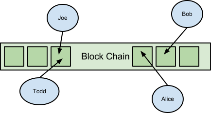

Thanks for taking the time to read my draft document on fully distributed games. If you have any comments or questions please contact kristopher.ives@gmail.com - I am open to sharing code but want to avoid creating a blast of interest among game implementors seeing an unfinished framework and worse yet folks creating insecure games. This is an extremely experimental idea that aims to create a fully open and distributed gaming platform.
Currently multiplayer games are mostly client-server based with some peer-to-peer games, typically where a single peer has more say than the others. All peer-to-peer games are instance based, where your progress doesn’t translate across multiple gaming sessions without the help of a master server. Currently all persistent online multi-player games use the client-server model. The advantage is that a single entity like a game company can control how the system works and pay the cost of maintaining the secured servers.
An elephant in the room
Similarly content distribution networks in the gaming field are centralized. While the Steam network does a good job of pleasing their player base and providing fast content delivery using a peer-to-peer like system, players are ultimately subject to their single point of failure when it does occur.
The drawbacks of a traditional client-server model are mainly scalability and freedom, as with any trade-off between centralization and decentralization. As a consumer of great client-server modelled games I am not on a crusade to destroy traditional technologies, but rather want to see both technologies emerge alongside one another.
The ideas presented in this article create a network of peers which publish events into a block-chain that stores the game history.

A distributed replacement for the client-server model
All games that run on the network must be fully deterministic, because all peers must agree on the state of the game via the order of events in the block chain. In simple terms any event in the game must operate on a game state and always modify that state with the same predictable results. This limitation frees each game from implementing any network specific code and greatly simplifies the understanding of games between peers.
Some ideas have been considered for creating a secure distributed source of entropy, possibly based on the block chain hashes. This would prevent cheating in many games and make simple games like Poker and Blackjack where the outcome of a single action or hidden information is the entire game.
All messages in the network are sent via a Peer. Each peer in the network represents an Account that joined the game at a specific time. Each Account has the following structure and information:
Account data is only known by the account holders and includes an RSA private key. Currently all private account data is stored computer running the game, but an idea of AES encryption into the block store could allow for entirely persistent accounts that can be logged into anywhere.
All data in the game is stored in a distributed cryptographic data structure called the Block Chain. It consists of all the events published to the network by peers. As peers play the game they simulate the game logic via a queue of events that modify the game state. Game time is divided into blocks as part of the block chain. All of the events that occurred during that time period are put into this block and published to the network so everyone can agree on what order everything happened.
Anyone who wants to talk on the network must generate a private-public key pair and sign the game history up to some point with their private key creating a proof-of-work and implicit agreement that the client knows the game logic and history. This allows games to enforce their own account creation difficulty rating. The tradeoff is most people don’t want to spend a long time waiting to generate an account.
An account broadcasts a login message containing a signature of a very recently block in the game block chain. This message gets verified and forms an immutable history of the player entering the game with that account during that time. The player continues to sign recent blocks into the block-chain as “keep-alive” messages. This forces all players to validate the game state for others to stay accepted in the network, because without keep-alive messages they will be ignored by the network.
The game history is distributed among peers of the network. In theory a peer can work from the genesis block, but as time goes on this gets expensive and is not scalable. Instead peers download a snapshot of the game state that occurred somewhat recently and resume the game from that point. Storing snapshots of the world at a certain point also allows for switchovers to occur when the game logic has been changed by a patch.
TODO - How events are published to the block-chain
When peers on the network disagree on how the game state played out they do so by publishing blocks extending the same block hash to different ones, creating a fork in the block chain. Peers will select the block chain that has the most unique players.
Eventually games will need to be structured in a way that comprises of many block-chains for different areas and types of events. Currently for simplicity a single block-chain is being worked on with the understanding many can be used later.
One limitation (shared with Bitcoin) is that all players must agree on all events of the game. This can be mitigated by splitting block chains apart, etc. the abstract problem still remains that any players exposed to events of others must get all data and information about those events. For example, consider a player that has a backpack with secret contents that logs in or enters the area of another player. All players are revealing their hand and hoping other players don’t look, possibly relying on some code that censors the cards so to speak. It’s a poor security model and the result is the contents of the bag has to be assumed to be known. This creates a visibility problem of events and objects at odds with the game state needing to be verified.